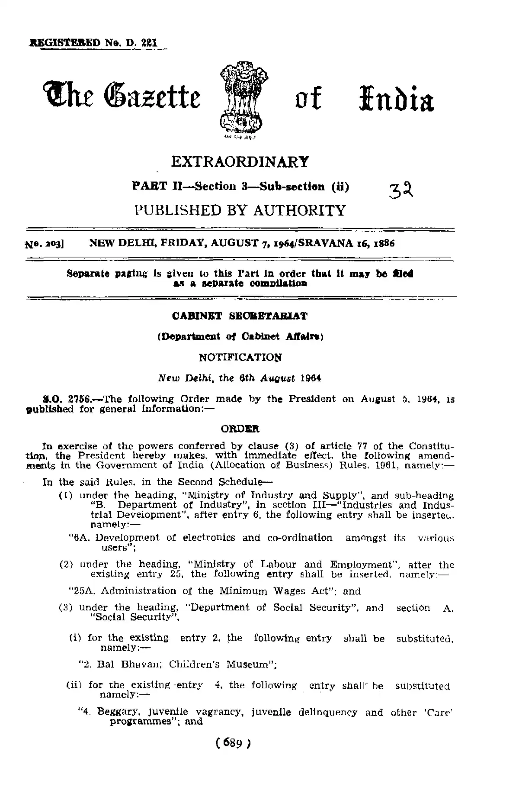
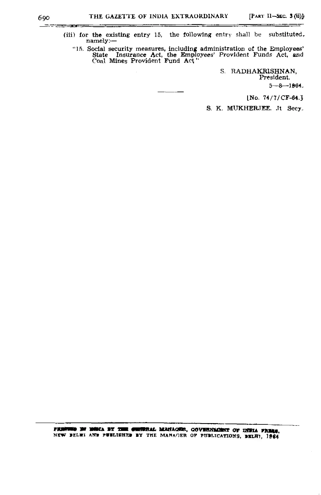

Amendment #32 (S.O. 2756, 1964)
5 changes: 0 to the First Schedule, 5 to the Second Schedule. 5 applied
The order, page by page
Page 1 of 2

1234after Schedule 2 › Ministry of Industry and Supply › Department of Industry › III-"Industries and Industrial Development" › entry 6
- 6A. Development of electronics and co-ordination amongst its various users
applied at schedule 2 › ministry MINISTRY OF INDUSTRY & SUPPLY › department B › group_heading III › entry 6A in the Rules after #32
after Schedule 2 › Ministry of Labour and Employment › entry 25
- 25A. Administration of the Minimum Wages Act
applied at schedule 2 › ministry MINISTRY OF LABOUR AND EMPLOYMENT. › part V › entry 25A in the Rules after #32
Schedule 2 › Department of Social Security › A. "Social Security” › entry 2
- 2. Bal Bhavan; Children's Museum
applied at schedule 2 › department DEPARTMENT OF SOCIAL SECURITY › group_heading A › entry 2 in the Rules after #32
states inferred loose
Schedule 2 › Department of Social Security › A. "Social Security” › entry 4
- 4. Beggary, juvenile vagrancy, juvenile delinquency and other 'Care programmes
applied at schedule 2 › department DEPARTMENT OF SOCIAL SECURITY › group_heading A › entry 4 in the Rules after #32
states inferred loose
Page 2 of 2

5Schedule 2 › Department of Social Security › A. "Social Security” › entry 15
- 15. Social security measures, including administration of the Employees State Insurance Act, the Employees' Provident Funds Act, and Coal Mines Provident Fund Act
applied at schedule 2 › department DEPARTMENT OF SOCIAL SECURITY › group_heading A › entry 15 in the Rules after #32
states inferred loose
How this document was read
Changes placed by an inference rule
| Change | Rule | Status | What |
|---|---|---|---|
| 3 | loose | accepted | change 3: group_heading A. "Social Security” taken for group_heading Social Security, named loosely |
| 4 | loose | accepted | change 4: group_heading A. "Social Security” taken for group_heading Social Security, named loosely |
| 5 | loose | accepted | change 5: group_heading A. "Social Security” taken for group_heading Social Security, named loosely |
From the Government of India (Allocation of Business) Rules, 1961 and their amendments, as published by the Cabinet Secretariat (cabsec.gov.in), read by orgpedia. The readings of the older scanned gazettes have known gaps.